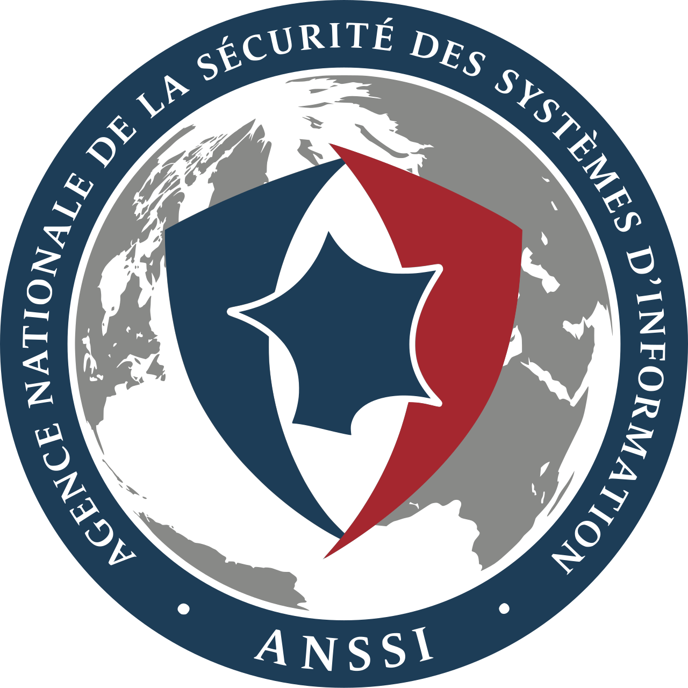
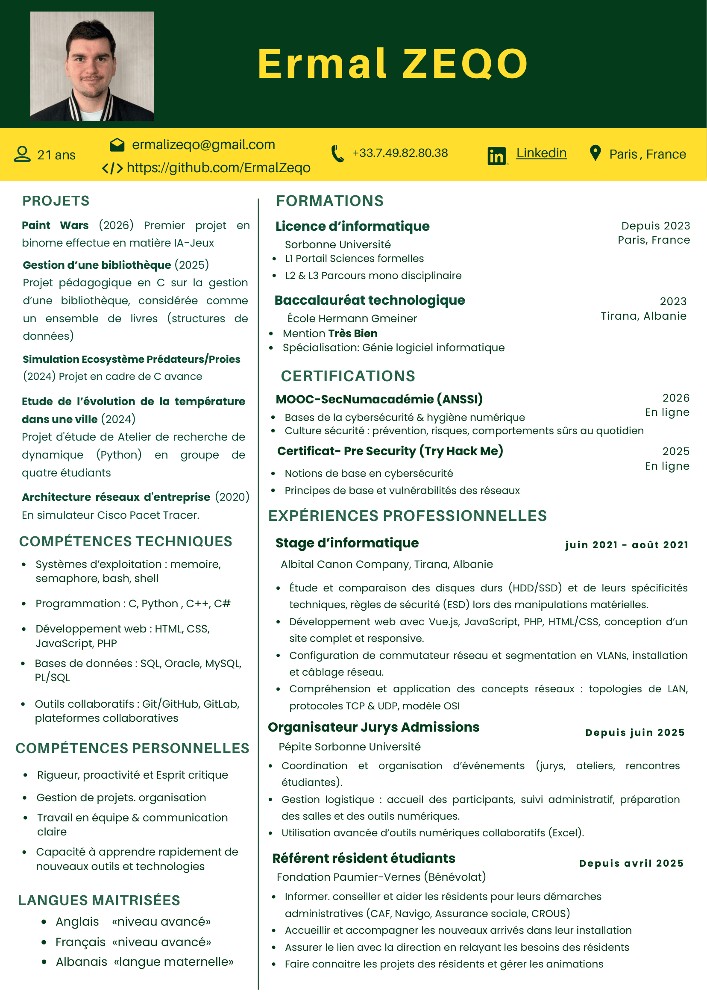

Depuis 2023
Sorbonne Université
Paris, France
Licence d’informatique
L1 Portail Sciences formelles
(Mathématique, ARE-Dynamique, Éléments de programmation en C et Python)
L2 & L3 Parcours mono-disciplinaire informatique
Je suis étudiant en troisième année de licence d’informatique à Sorbonne Université (ex-UPMC). Cette page présente les projets que j’ai réalisés au cours de mon parcours académique.
Mon parcours académique, du baccalauréat à ma licence d’informatique.
Paris, France
Licence d’informatique
L1 Portail Sciences formelles
(Mathématique, ARE-Dynamique, Éléments de programmation en C et Python)
L2 & L3 Parcours mono-disciplinaire informatique
Tirana, Albanie
Baccalauréat technologique
Mention Très Bien
Spécialisation : Génie logiciel informatique
Quelques certifications obtenues ou suivies dans le domaine de la cybersécurité.

HTML/CSS, PHP, JavaScript, XML
Architecture client-serveur, Analyse de trafic, TCP/IP, UDP, DNS, SSH,
C#, Java
Synchronisation, Gestion de memoir, Scripting Bash/ PowerShell, Processus Unix, Administration Linux & Windows Server, Diagnostiquer les pannes
Python, C, C++
SQL, Oracle, MySQL, Pl/SQL
Projet réalisé dans le cadre du TME Cryptanalyse du chiffrement de Vigenère. L’objectif est d’implémenter en Python plusieurs outils permettant de cryptanalyser un texte chiffré avec le chiffre de Vigenère, de retrouver sa clé, puis de déchiffrer le message.
Projet d'étude de Atelier de recherche de dynamique en groupe de quatre étudiants.
Projet pédagogique en programmation sur la gestion d’une bibliothèque, considérée comme un ensemble de livres
Projet en cadre de C avance
Ce projet porte sur la programmation d’automates finis en Python. L'objectif est de mettre en pratique plusieurs algorithmes étudiés en cours et en TD, en s’appuyant sur des structures de données déjà fournies pour manipuler les états, les transitions et les automates. À travers ce travail, nous avons appris à construire, tester et compléter différentes fonctions liées aux automates, notamment leur manipulation, leur déterminisation et les opérations sur les langages qu’ils reconnaissent.
Dans le cadre de ce projet, nous avons développé un simulateur de CPU permettant de modéliser de manière simplifiée l’exécution d’instructions par un processeur. Cette réalisation s’appuie sur plusieurs composants essentiels, notamment les registres, les segments mémoire, la pile, ainsi qu’un parser capable d’interpréter un pseudo-assembleur.
Premier projet en binome effectue en matière IA-Jeux.
Cliquez sur le bouton pour l’ouvrir en taille complète.

Merci d'avoir visité mon portfolio. Je recherche une alternance de 24 mois en cybersécurité à partir de septembre 2026 — Île-de-France.